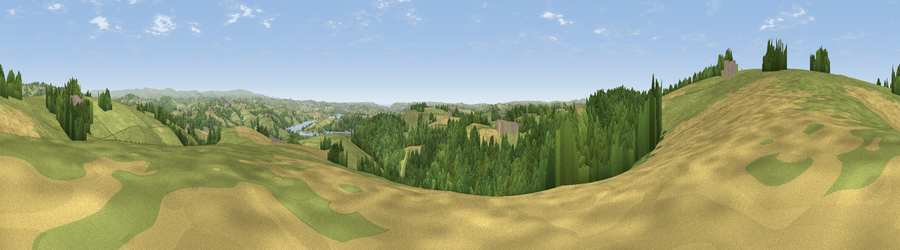

Viewpoint near St Dominic
#12142 in England · top 20% of its area beats it · near St DominicThe view, rendered

A 360° render of this exact spot computed from the terrain model, tree cover and land cover — summer colours, afternoon light, calibrated against photographs of famous viewpoints. Real trees, hedges and buildings will differ in detail.
The panorama
Grey silhouette: terrain skyline in each direction (720 bearings, Earth curvature and refraction included). Dashed green: skyline with trees (+15 m) and buildings (+8 m) as obstacles. Blue strip: how far the ground is visible on each bearing.
Where the view opens
Wedge length = distance to the farthest visible ground on that bearing (vegetation-aware). Rings at 10, 25 and 50 km.
What fills the view
46% grassland · 37% woodland · 14% cropland · 1% built-up ·
Angular shares of the visible panorama (visual magnitude), not map area. Landscape diversity 0.48 (0–1 Shannon).
Key numbers
More beautiful places nearby
The staircase of upgrades: each row has a higher view potential than everything closer. Driving times are estimates from straight-line distance, calibrated against real road routing — check an actual route before setting out.
| Place | Direction | Drive | Score |
|---|---|---|---|
| Viewpoint near St Mellion | WNW · 2 km | ~4 min | 62.4 |
| Viewpoint near St Mellion | SSE · 2 km | ~5 min | 67.3 |
| Kernock Hill | SW · 4 km | ~8 min | 68.6 |
| Viewpoint near St Ann's Chapel | N · 5 km | ~11 min | 73.5 |
| Hingston Down | NNE · 5 km | ~11 min | 78.3 |
| Kit Hill | NNW · 5 km | ~11 min | 80.3 |
| Viewpoint near Crafthole | SSW · 13 km | ~24 min | 80.5 |
| Viewpoint near Crafthole | SSW · 13 km | ~25 min | 81.0 |
50.47791, -4.26096 · source: screening · position refined by local search. Computed location — check access rights before visiting.